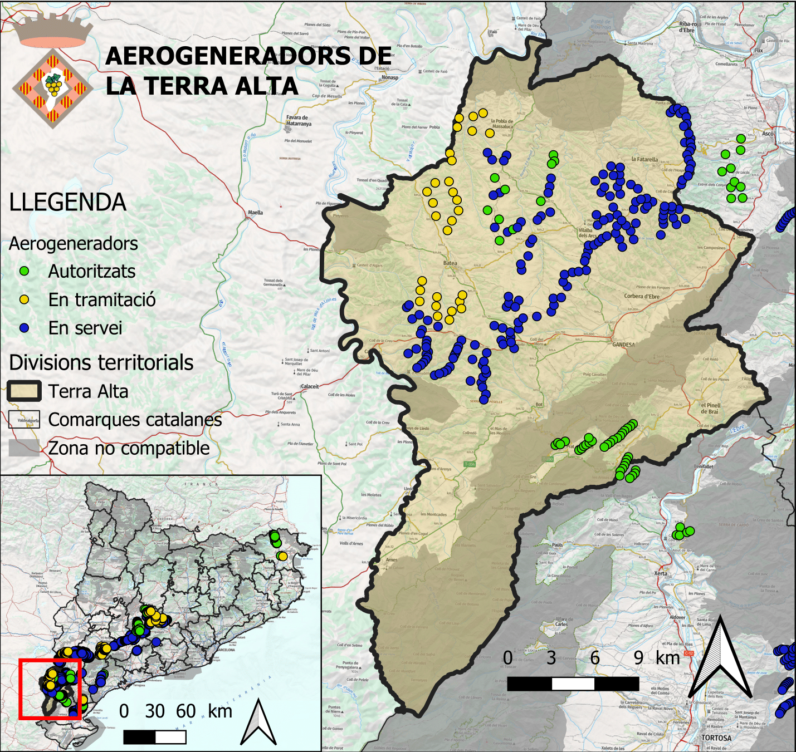

Desequilibri eòlic: La concentració dels parcs eòlics al sud. El cas de la Terra Alta

Durant els darrers anys, diverses comarques meridionals de Catalunya han estat implicades en un procés d'implantació de centrals eòliques, generalment portat a terme per empreses de grans dimensions alienes al territori i amb projectes de gran mida, que comporten un ús del sòl i la transformació dels paisatges tradicionals. Aquestes transformacions s'han interpretat sovint per part d'alguns agents locals i de la ciutadania com degradants dels valors del paisatge local i com contràries als seus interessos (Saladié, 2018).
Un exemple és el de la D.O. de la Terra Alta, que el juliol del 2024 va expressar la seva disatisfacció respecte a la instal·lació de més parcs d'energia eòlica a la comarca. "A la Terra Alta hi ha gairebé el 30% de tota la potència eòlica instal·lada a Catalunya (1.406 MW), quan només representa el 0,14% del total d'habitants de Catalunya amb 11.473 persones". Des de la D.O. lamenten que aquestes instal·lacions responen a un "model elèctric centralitzat en mans de poques empreses, ubicades en espais agroforestals, i situades lluny dels principals centres de consum, fet que implica la construcció de noves línies elèctriques d'alta tensió" (Vicens, 2024).
El Ministeri per la Transició Ecològica i el Repte Demogràfic del govern de l'Estat ha elaborat una eina per zonificar la sensibilitat ambiental del territori, restringint l'àmbit terrestre on es permeten els macroprojectes d'instal·lacions d'energia eòlica i fotovoltaica (Ministeri per la Transició Ecològica i el Repte Demogràfic, s.d.). Les zones no compatibles es representen amb un gris al mapa.
Fonts i referències:
- BOE i Generalitat de Catalunya. Parcs eòlics.
- ICGC. Mapa base topogràfic. https://geoserveis.icgc.cat/servei/catalunya/mapa-base/wms
- Generalitat de Catalunya. Zona no compatible. https://sig.gencat.cat/ows/ENERGIA/wfs
- SALADIÉ, Sergi. Conflicte entre el paisatge i l'energia eòlica: El cas de les comarques meridionals de Catalunya. 2018.
- VICENS, Eva. La DO Terra Alta, contra instalar nuevos parques eólicos a la comarca. 2024.
- Ministeri per la Transició Ecològica i el Repte Demogràfic. Zonificación ambiental para energías renovables: Eólica y Fotovoltaica.
Treball fet per l'assignatura Dinàmiques de l'Aigua i els Recursos Naturals del grau en Geografia, Medi Ambient i Planificació Territorial de la Universitat Autònoma de Barcelona.